Mover Creator Theory¶
Introduction¶
This document should contribute to the user’s understanding of the equations which make up Mover Creator’s predictions for aerodynamic coefficients and mass distribution.
Mover Creator produces vehicles for the WSF_P6DOF_MOVER, WSF_RIGID_BODY_SIX_DOF_MOVER, and WSF_GUIDED_MOVER, and so estimates coefficients for aerodynamic forces as well as moments. In some cases, the derivatives of these coefficients are also provided in order to provide realistic aerodynamic damping effects. In producing these coefficients, Mover Creator attempts to consider multiple variables for each component, such as angles of attack, Mach number, and control surface deflection angle.
Given a user-provided total vehicle mass, Mover Creator apportions mass to components based on their relative sizes. The locations of these components, as well as their own intrinsic moments of inertia, contribute to the vehicle’s center of mass and to its whole-vehicle moment of inertia tensor.
List of Symbols¶
Symbol |
Definition |
|---|---|
|
angle of attack (in this document, with respect to the component, rather than the vehicle) |
|
angle of side slip (again, with respect to the component) |
wetted surface area of a component |
|
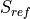 |
reference surface area (in this document, of a component) |
lift coefficient, specific to a single component |
|
tabulated lift coefficient for a wing section |
|
zero-lift pitching moment coefficient, specific to a single component |
|
tabulated pitching moment coefficient for a wing section |
|
drag coefficient, specific to a single component |
|
tabulated drag coefficient for a wing section |
|
coefficient of drag induced by lift or side force |
|
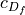 |
coefficient of drag from skin friction |
coefficient of drag from wave drag effects particular to a body’s shape |
|
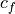 |
skin friction coefficient |
|
Oswald efficiency factor for lifting surfaces |
airfoil-specific factor for transonic drag efficiency |
|
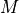 |
Mach number |
|
Mach number where wave drag is at its peak for a given surface and incidence angle |
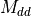 |
Mach number where drag diverges from subsonic drag as wave drag is introduced |
|
factor to account for Mach effects over lifting surfaces |
|
|
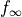 |
|
aspect ratio |
|
Reynolds number |
|
lifting surface thickness-to-chord ratio |
|
lifting surface sweep angle, at a specific chord fraction if subscripted, at the leading edge otherwise |
|
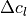 |
change in a lifting surface’s 2D (section) lift coefficient from control surface deflection |
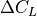 |
change in a lifting surface’s 3D (surface) lift coefficient from control surface deflection |
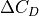 |
change in a lifting surface’s drag coefficient from control surface deflection |
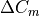 |
change in a lifting surface’s pitching moment coefficient from control surface deflection |
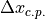 |
change in a lifting surface’s center of pressure from control surface deflection |
2D lift curve slope |
|
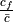 |
ratio between the mean chord of a control surface and the mean chord of its parent fixed surface |
|
ratio between the span of a control surface and the span of its parent fixed surface |
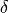 |
control surface deflection angle |
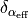 |
change in effective |
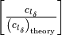 |
empirical ratio between observed and theoretical slope of 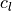 with respect to |
|
theoretical slope of with respect to |
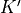 |
correction factor to account for |
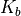 |
correction factor to account for |
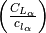 |
ratio between 3D and 2D undeflected lift curve slopes |
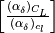 |
ratio between changes in effective |
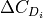 |
change in a lifting surface’s lift-induced drag coefficient from control surface deflection |
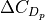 |
change in a lifting surface’s profile drag coefficient from control surface deflection |
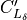 |
reference supersonic slope of |
|
ratio of specific heats, assumed equal to 1.4 for Earth’s atmosphere |
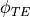 |
approximated angle of the surface cross-section trailing edge |
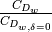 |
ratio between the wave drag of the deflected surface and that of the undeflected surface |
|
assumed surface roughness ratio |


 with respect to , assuming a flat plate and a full-span control surface
with respect to , assuming a flat plate and a full-span control surface

Aerodynamic Prediction¶
Surfaces and Wings¶
Baseline wing (and other surfaces) lift, drag, and pitching moment coefficients are provided as tabulated data as a function of  .
Drag coefficient is modified according to Mach number 1 2 and Reynolds number; pitching moment coefficient is modified according to aspect ratio.
Side force coefficient is neglected.
.
Drag coefficient is modified according to Mach number 1 2 and Reynolds number; pitching moment coefficient is modified according to aspect ratio.
Side force coefficient is neglected.
(1)¶
(2)¶![c_{D} &= c_{D_{\textnormal{baseline}}} f_{M} + c_{D_{i}} + 2 c_{D_{f}}
c_{D_{i}} &= \frac{c_{L}^{2}}{\pi e AR}
Re > 500000: c_{D_{f}} &= \frac{1.328}{\sqrt{Re}}
Re \leq 500000: c_{D_{f}} &= \frac{0.0307}{\sqrt[7]{Re}}
\textnormal{transonic: } f_{M} &= 1 + \frac{df}{dM} (M - M_{dd})
\textnormal{supersonic: } f_{M} &= e^{ln(f_{\textnormal{peak}} - f_{\infty}) + M_{\textnormal{peak}} - M} + f_{\infty}
M_{dd} &= M_{dd_{0}} + \max \left(0, \frac{1}{3} e_{1} \sin|\Lambda| - \frac{1}{2} \frac{t}{c} \sin^{2}|\Lambda| \right)
M_{dd_{0}} &= e_{1} - \frac{1}{2} \frac{t}{c} - 0.02
M_{\textnormal{peak}} &= M_{dd} + 0.125 \cos^{3}|\Lambda| + 0.01
f_{\textnormal{peak}} &= 4 - 3 \sin|\Lambda|
f_{\infty} &= 0.6 f_{peak} + 0.4
\frac{df}{dM} &= \frac{f_{\textnormal{peak}} - 1}{M_{\textnormal{peak}} - M_{dd}}](../_images/math/30c9cb0c9f5d710e2490619635de0fad6ad75ee1.png)
(3)¶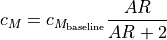
The center of pressure for surfaces sits at quarter-chord up to Mach 0.9, at half-chord at Mach 1.9, and is linearly interpolated between the two.
Control Surfaces¶
Control surfaces can be modeled as either “full-flying” unbroken pieces which rotate about a point at the control surface’s root chord (think missile control fins), or as “hinged” surfaces, where a section of the surface at the trailing edge deflects up or down about a spanwise hinge (think aircraft rudders). The full-flying case is relatively straightforward – the deflection angle can be treated as a shift in the angle of attack. For hinged control surfaces, the calculus can be more complicated.
Mover Creator uses equations and curve fits taken from the USAF DATCOM to model hinged control surfaces. One key difference is the definition of the transonic regime. DATCOM describes Mach 0.6 through 1.2 as transonic, but Mover Creator uses the method listed in (2). As a compromise, hinged surfaces assume a transonic region that starts at Mach 0.8 and ends at 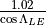.
Lift effects are informed by sections 6.1.1 and 6.1.4 of the DATCOM, and drag effects are informed by section 6.1.7.
Subsonic¶
For subsonic conditions, a 2D lift increment is computed, then modified to account for sweep angle, aspect ratio, and chord and span fraction.
(4)¶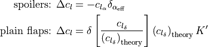
The inputs to these functions are themselves functions of control surface dimensions, represented by curve fits of DATCOM Figures 6.1.1.1-52, 6.1.1.3-12a-b, 6.1.1.3-13a, 6.1.1.3-39a-b, and 6.1.1.3-40. For both spoilers and flaps, the 3D lift coefficient increment can be produced from the 2D increment.
(5)¶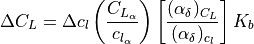
The missing pieces for this modification are taken from curve fits of DATCOM Figures 6.1.6.1-14 and 6.1.6.1-15.
Subsonic drag increment consists of two components – profile drag and induced drag.
(6)¶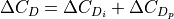
The induced drag calculation employs a finite element span loading method, which could be used to provide more sophisticated pitching moment calculations at a later phase of development. This method is fairly involved for the scope of this document and so will not be repeated here – instead, it can be found in section 6.1.7A of the DATCOM. Profile drag is more straightforward and is constructed by a curve fit of DATCOM Figure 6.1.7.22.
Supersonic¶
For the supersonic case, the slope of the 3D lift coefficient increment is calculated directly.
(7)¶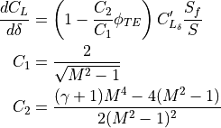
The value is found as a function of Mach number and trailing edge sweep angle from a curve fit of DATCOM Figure 6.1.4.1-25.
For supersonic drag, the increment is considered as an increment of wave drag alone. The DATCOM prescription in section 6.1.7C assumes a flat plate and presents a singularity near , so the implementation is simplified and modified to account for surface thickness.
(8)¶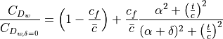
Additional Information¶
Data in the transonic regime is interpolated between the subsonic and supersonic values.
Moment coefficient deltas are computed as a result of two different phenomena. First, the changes in lift and drag on each component create different moments about the center of gravity as a matter of course. Secondly, per DATCOM section 6.1.2., a component-intrinsic moment coefficient delta can be estimated based on the change in lift coefficient.
(9)¶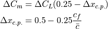
Speed Brakes¶
Similar to lifting control surfaces, speed brakes are computed as a full-flying surface. Speed brakes are modeled very simply, similar to a flat plate for both the subsonic and supersonic cases. 4 The lift (or side force, depending on how the brake is installed) is reduced by half, assuming that the suction pressure of the flat plate is eliminated.
An additional assumption places stall at 10 degrees of wind-relative angle of attack and keeps lift constant beyond that stall angle. Zero-lift moment coefficient is assumed negligible prior to stall, stepping to a stabilizing 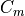 of 0.075.
Note that in the following equations, alpha is the angle of attack of the deflected brake, not the angle of attack of the vehicle. For speed brakes, the transonic region is between Mach 0.8 and Mach 1.2.
Subsonic¶
(10)¶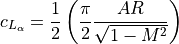
(11)¶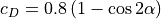
Supersonic¶
(12)¶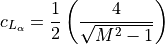
(13)¶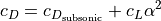
Bodies and Nacelles¶
For bodies and nacelles, the drag coefficient is modified according to Mach number, based on the shape of the leading section.
(14)¶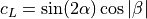
(15)¶
(16)¶![c_{D} &= c_{D_{\textnormal{shape}}} + c_{D_{\alpha,\beta}} + c_{D_{i,L}} + c_{D_{i,Y}} + c_{D_{f}}
c_{D_{\alpha,\beta}} &= \sin^{2} \alpha (\cos^{2}\beta + 1) + \sin^{2} \beta (\cos^{2}\alpha + 1)
c_{D_{i,L}} &= \frac{c_{L}^{2}}{\pi}
c_{D_{i,Y}} &= \frac{c_{Y}^{2}}{\pi}
c_{D_{f}} &= c_{f} \frac{S_{wet}}{S_{ref}}
r &= \frac{0.001}{l_{\textnormal{inches}}}
Re > 51 r^{-1.039}: c_{f} &= 0.032 r^{0.2}
Re \leq 51 r^{-1.039}, Re < 50000: c_{f} &= \frac{1.328}{\sqrt{Re}}
Re \leq 51 r^{-1.039}, Re \geq 50000: c_{f} &= \frac{0.0307}{\sqrt[7]{Re}}](../_images/math/06b45fc5bbc652b89ef644bf8d5c27c439cd5416.png)
The shape factor uses reference drag coefficient values at different Mach numbers for the various leading section shapes. 3 From these reference points, in combination with fineness () values, a spline is constructed to approximate the drag rise in the transonic region.
Zero-lift pitching moment is neglected, and the center of pressure is placed near the center of mass. As a result, bodies of rotation contribute little to no aerodynamic moment, other than incidental torques generated by drag acting on bodies located offset from the vehicle center of mass.
Dishes¶
Dishes, like those found atop AWACS fuselages, are modeled relatively simply.
(17)¶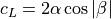
(18)¶
(19)¶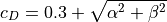
As with cylindrical bodies, the intrinsic moment contribution from dishes is neglected.
References
- 1
W.H. Mason, “Configuration Aerodynamics”, Chapter 7: Transonic Aerodynamics of Airfoils and Wings.
- 2
NASA SP-367 “Introduction to the Aerodynamics of Flight”. Chapter V: Transonic Flow.
- 3
JPL, “Aerodynamic Characteristics of Blunt Bodies”.
- 4
Nicolai, Leland M. & Carichner, Grant E. “Fundamentals of Aircraft and Airship Design”. Vol I – Aircraft Design.